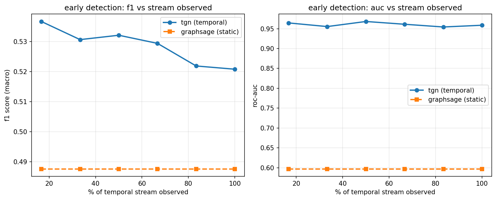

most bot detectors look at one account at a time and ask "does this look like a bot." sophisticated bot networks are built to pass that test. what they can't hide is when a cluster of accounts moves together — this project scores accounts with a temporal graph network that has memory of connection history, and separately flags clusters of accounts whose timing is statistically impossible to be organic.
the graphsage baseline sees one static snapshot of the graph. the tgn walks the edge stream in order and updates a memory vector per account as events arrive. this chart compares both at increasing fractions of the observed timeline.

output of the burst detector on the same run — groups of accounts that never directly follow each other, but pile onto the same handful of targets inside an implausibly tight window.
| cluster size | median inter-arrival | coordination score | events |
|---|
| account | bot probability | risk | actual label |
|---|
twibot-20 and twibot-22 (the standard benchmarks for this task) both require emailing the dataset authors and waiting for manual approval, which hasn't come through yet. everything above was measured on a synthetic temporal graph generator built for this project instead — organic accounts follow a circadian-modulated poisson process, injected bot clusters activate in synchronized bursts and go dormant between reactivations, and individual account features are drawn from overlapping distributions between bots and humans on purpose, so the static baseline can't just solve this from profile stats. code for both the generator and a drop-in twibot-format loader are in the repo. full writeup and source: github.com/aadihuria/tgn-bot-detection.